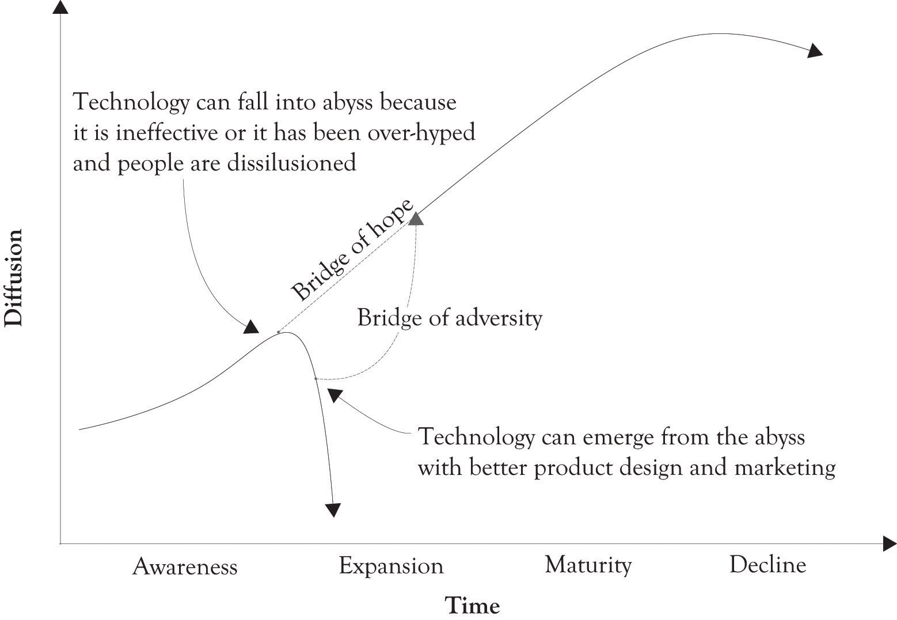

We have adapted the Hype Cycle model and the chasm approaches and integrated them into the traditional S-curve that is used to model the technological life cycle. As illustrated in Figure 1.6 "Crossing the Bridge of Hope and Climbing the Bridge of Adversity", there is often a crisis of adoption as a technology begins to transition from awareness to expansion. There is a major bridge to be crossed where attention to design and marketing and performance are critical. It is the Bridge of Hope. If the performance of the technology is inadequate or the technology falls off of the public’s radar, then there is a diffusion crisis, and the technology can fall into the chasm and become irrelevant. It is possible to crawl out of the chasm with better product design, an influx of resources, and better marketing, but it is a difficult climb out of the abyss. The climb out of the abyss is over the Bridge of Adversity. Companies that have invested in emerging technologies are forever hopeful that they can cross the abyss from relative obscurity to expansion and reap the monetary rewards derived from the expansion of the marketplace.
Figure 1.6 Crossing the Bridge of Hope and Climbing the Bridge of Adversity
